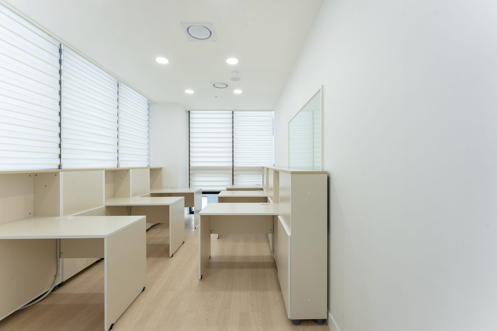
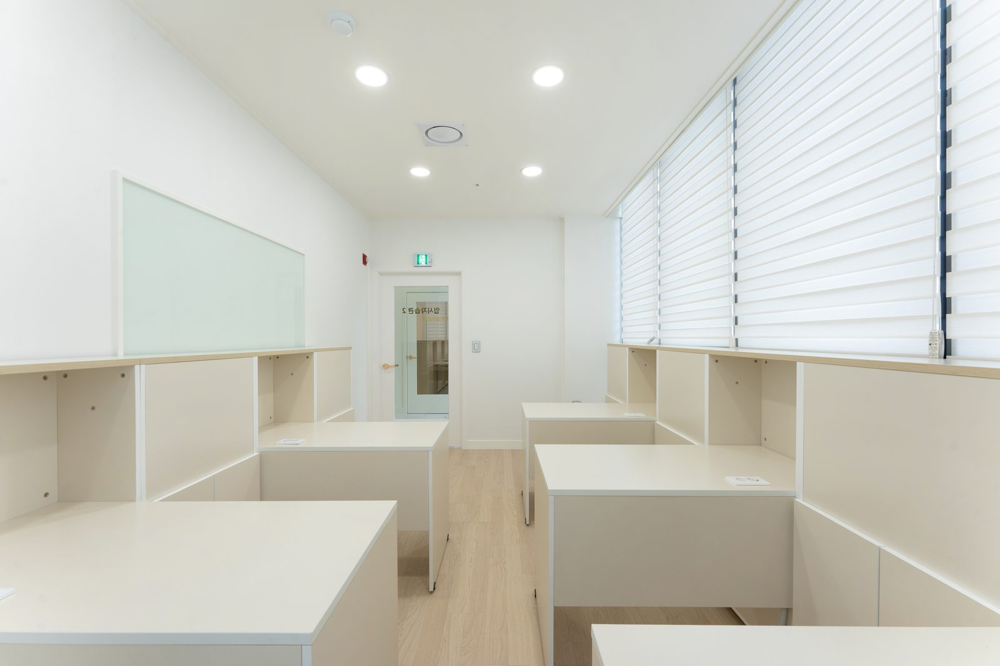
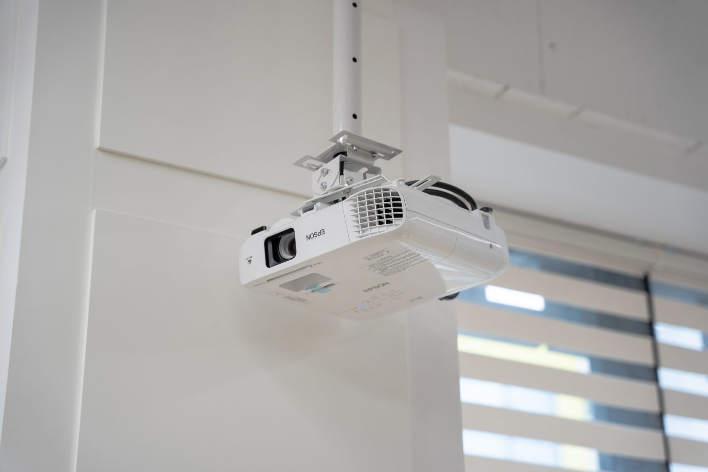
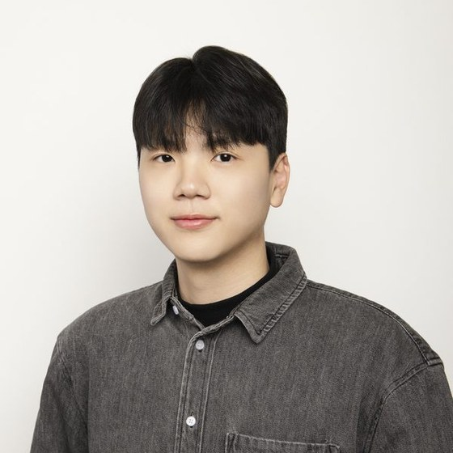
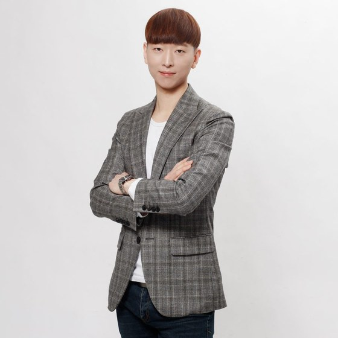

공간
완전 1인 개인석입니다.





미사고 고1 · 황웅 전담
미사고 1학년은 교재 밖에서 지문을 가져옵니다. 지난 기말은 Amy Tan 수필 한 편에서만 여섯 문항, 24.2점이 나왔습니다. 교재를 아무리 돌려도 이 지문은 만날 수 없습니다.
처음 보는 글을
시간 안에 읽어내야 합니다.
원문 그대로 낸 건 10.8점(2·3·4번, 전부 올림포스)뿐입니다. 최고 배점 4.4점짜리 여섯 문항은 어법 조합형·재구성 변형·낯선 지문 추론에 걸려 있습니다 — 암기로 풀리는 자리에는 없습니다.
여름방학이 끝나자마자 바로 시험입니다. 아래 중 두 개 이상이면 방식을 바꾸셔야 합니다.
낯선 지문을 시간 안에 읽으려면 문장을 끊어 읽는 훈련이 되어 있어야 합니다. 저희는 문법 10가지를 총정리한 뒤 유형별로 끊어 잡고, 통과할 때까지 재시험을 봅니다.

화요일에 나가고, 토요일 클리닉에서 안 된 것만 붙잡습니다.
| 요일 · 시간 | 구성 |
|---|---|
| 화 18:00~21:00 | 3시간 정규정규 |
| 토 10:00~13:00 | 주말 3시간클리닉 |
미사고 고1 · 김영하 전담
미사고 1학년, 2025년 10월 1일에 치른 시험입니다.
저희가 그 시험지를 문항마다 나눠 영역과 배점을 옮겨 적었습니다.
고전시가가 가장 컸습니다. 「정읍사」, 「가시리」, 정지상 「송인」, 홍랑 「묏버들」, 허난설헌 「사시사」 다섯 편을 (가)부터 (마)까지 한 세트로 묶어 6문항, 25.8점을 냈습니다.
문법은 5문항 20.9점이었습니다. 그중 4문항 17.0점이 『월인석보』 훈민정음 서문을 원문으로 놓고 푸는 문제였고, 나머지 한 문항은 어휘의 뜻이 어떻게 바뀌었는지를 묻는 3.9점짜리였습니다.
두 영역을 더하면 46.7점입니다. 학교가 발표한 표가 아니라, 저희가 문항별 배점을 더해서 낸 숫자입니다.
저희가 확보한 2학기 중간 시험지는 이 한 회뿐입니다. 올해도 똑같이 나온다는 뜻은 아닙니다. 다만 이 단원을 먼저 잡아 두는 편이 안전합니다.
그래서 1학기 성적표는 2학기 중간을 거의 예고하지 못합니다.
미사고 1학년 1학기 중간은 2025년과 2026년, 두 해를 다 봤습니다. 두 회 모두 문학이 12문항이었고, 12문항이 전부 현대 작품이었습니다. 작년 2학기 중간에서는 문학 15문항 중 10문항이 고전이었습니다.
문법도 자리를 옮겼습니다. 1학기 문법은 7~8문항에 30점 안팎이었고, 2학기 중간에는 5문항 20.9점으로 줄었습니다. 줄어든 자리에 중세국어가 들어왔습니다.
1학기에 국어가 잘 나왔던 아이가 2학기에 흔들리는 이유는 대개 여기입니다. 공부를 덜 해서가 아니라, 1학기에 통했던 방식이 2학기 범위에서 통하지 않아서입니다.
버리고 갈 문항이 없다는 뜻입니다.
미사고 1학년 국어 지필 6회, 144문항의 배점을 하나도 빼지 않고 다 세어 봤습니다. 가장 낮은 배점이 3.7점, 가장 높은 배점이 4.6점입니다. 3점대 초반으로 내려가는 문항은 하나도 없었습니다. 평균은 4.17점입니다.
어려운 문항 두어 개는 버리고 가자는 말이 이 시험에서는 안 통합니다. 평균 배점으로 계산하면 두 문항만 틀려도 91.7점, 세 문항이면 87.5점입니다.
그래서 저희는 틀린 문항을 어렵다, 쉽다로 나누지 않습니다. 어느 영역에서 몇 점이 빠졌는지로 나눕니다. 고전에서 빠진 점수와 문법에서 빠진 점수는 9월에 해야 할 일이 완전히 다릅니다.
본문 작품만 정리해서는 손을 못 대는 문항이 있습니다.
작년 2학기 중간은 24문항 중 12문항에 <보기>가 붙었습니다. 그 <보기> 자리로 들어온 시가 다섯 편입니다. 정지용 「달」, 김소월 「초혼」 전문, 김기림 「길」 전문, 성삼문 시조, 정희성 「물구나무서기」. 시험 본문에는 없던 작품들입니다.
배점이 가장 높았던 4.6점 세 문항도 셋 다 <보기>를 쓰는 문항이었습니다.
선지 형태도 만만치 않습니다. 'ㄱ부터 ㅂ까지 중 맞는 것을 있는 대로 고르라'는 조합형, 지문에 붙은 ㉠부터 ㉲까지를 하나씩 맞춰 보게 하는 기호 대응형이 회차마다 두세 문항씩 나옵니다. 조합형은 진술 하나만 잘못 판단해도 문항 전체가 틀립니다.
문항은 24개인데 선지는 120개입니다. 조합형까지 세면 아이가 시험장에서 내려야 하는 판단은 그보다 많습니다.
지문만 그대로 오고, 문항은 학교가 새로 만듭니다.
미사고 1학년 지필 6회를 보면 화법·작문 세트와 독서 지문이 여섯 번 다 그해 고1 전국연합학력평가에서 왔습니다. 작년 2학기 중간은 9월 학평이었습니다. 작문은 푸드테크를 다룬 글의 초고였고, 독서는 샤프츠베리의 미학과 듀이의 '하나의 경험'을 나란히 놓은 두 지문이었습니다.
여기서 오해하기 쉬운 지점이 있습니다. 학평 기출을 풀어 두면 된다는 뜻이 아닙니다. 지문은 같아도 문항은 학교가 새로 만듭니다. 학평에서 안 물었던 것을 묻습니다.
그래서 저희는 학평 지문에서 문제를 떼고 지문만 다시 읽게 합니다. 문제를 외워 온 아이는 여기서 걸립니다.
9월 말에 시작하면 범위를 훑는 것으로 끝납니다.
미사고 2학기 중간은 10월 13일부터 16일까지입니다.
수업에서 하는 일은 단순합니다.
수업은 김영하 원장이 직접 합니다.
주 1회 2시간 30분 정규반입니다.
다른 과목과 시간이 겹치지 않게 잡아 드립니다. 상담 때 지금 다니시는 곳의 요일과 시간을 말씀해 주세요.
지난 기말이 어떻게 나왔는지 먼저 보시는 게 순서입니다. 수업 상담은 그 다음에 하셔도 됩니다.
국어 정규반은 주 1회 2시간 30분입니다.
| 반 | 요일·시간 | 수강료 | 담당 |
|---|---|---|---|
| 미사고 1학년 국어 정규반 | 일 15:00~17:30 | 월 290,000원 | 김영하 |
미사고 고1 · 임결 · 유용권 전담
그 시험의 시험 시간은 50분이었습니다.
작년 7월 1일 2교시에 치른 시험입니다. 객관식 17문항에 서술형 2문항, 모두 19문항 100점이었습니다.
저희가 19문항을 하나씩 보면서 '학생이라면 이 문제에 몇 분을 쓸까'를 매겨 적었습니다. 그걸 다 더한 값이 68분입니다. 아이들이 실제로 잰 기록은 아닙니다. 이 시험이 시간을 얼마나 잡아먹는지 재려고 만든 숫자입니다.
앞 여덟 문항은 무난했습니다. 12번부터 계산량이 늘어납니다. 시간을 가져간 자리는 마지막 고난도 문항이 아니라 중간 번호대였습니다.
그게 쌓여서 뒤쪽에서 시험이 끝납니다. 12·13·15·16·17번을 다 놓치면 28.6점입니다. 못 푼 게 아니라, 그 문제 앞에 도착하지 못한 겁니다.
선다형 18문항 88점에 논술형 2문항 12점, 모두 20문항 100점이었습니다.
배점이 1번 4.2점에서 18번 5.6점까지 번호를 따라 조금씩 올라갑니다. 논술형은 각 6.0점입니다. 17번, 18번, 논술형 두 문항의 배점을 더하면 23.2점입니다.
고1은 시간을 매기는 대신 아이들 시험지를 한 장씩 받아 채점 흔적까지 봤습니다. 중간 번호대 4점대 중반 문항에서 예상보다 1~2분씩 더 쓴 자국이 남아 있었습니다.
논술형 1번에서는 절댓값 안 x의 계수로 나눌 때, 그 계수가 0인 경우를 빼먹은 답안이 여럿 있었습니다. 정답 41을 40으로 쓴 겁니다. 저희가 받은 시험지 안에서의 이야기라 비율로는 말씀드리지 않겠습니다. 다만 푸는 법을 몰라서 틀린 답안은 아니었습니다.
논술형 2번은 답란이 통째로 비어 있는 시험지도 있었습니다. 한 문항에 6.0점입니다. 몰라서 비운 답란이라고 보지 않습니다.
1학기에 시험 본 과목은 2학기 중간에 나오지 않습니다.
고1은 1학기에 공통수학1을 봤습니다. 경우의 수, 부등식, 행렬, 방정식이 여기 들어 있습니다. 2학기 중간은 공통수학2입니다. 다루는 대상이 통째로 바뀝니다.
고2는 1학기에 대수를 봤습니다. 삼각함수와 수열이었습니다. 미사고 고2 기말은 100점 중 63.6점이 삼각함수였습니다. 저희가 문항을 영역별로 나눠 배점을 더한 값입니다. 2학기 중간은 미적분1이라, 삼각함수에 63.6점이 걸렸던 1학기 사정은 그대로 오지 않습니다.
학교가 2학기 범위를 공지하는 시점은 시험이 가까워졌을 때입니다. 공지를 기다렸다가 시작하면 지난 기말을 되짚을 시간은 남지 않습니다.
그래서 저희는 새 진도부터 나가지 않습니다. 지난 기말에서 잃은 자리를 먼저 확인하고 2학기 진도를 얹습니다.
진도표에는 정답률이 적히지 않습니다.
진도는 학원이 관리해 드립니다. 그런데 표시만 남은 문제는 아직 아이 것이 아닙니다.
확인하는 방법은 간단합니다. 지난주에 풀어서 맞힌 문제를 다시 꺼내, 어떻게 풀었는지 말로 설명하게 해 보세요. 설명이 막히면 그 문제는 답만 맞은 겁니다.
미사고 고2 기말 19문항 중 교과서 수준은 4문항뿐이었습니다. 나머지 15문항은 수능특강 유형을 바꾸거나 모의고사 기출을 다시 짠 문항으로 봤습니다. 답을 외워 둔 문제는 이런 시험에 그대로 나오지 않습니다.
셋은 처방이 완전히 다릅니다.
첫 주에 지난 기말 시험지를 다시 풉니다. 이번에는 문항마다 걸린 시간을 적게 합니다. 계산에서 샜는지, 개념에서 막혔는지, 시간에서 밀렸는지가 여기서 갈립니다. 계산이면 손을 고치고, 개념이면 정의로 돌아가고, 시간이면 푸는 순서를 바꿉니다.
새 단원은 자기 말로 설명해 보게 합니다. 설명이 막히면 넘어가지 않습니다.
같은 개념을 같은 유형, 비슷한 유형, 한 단계 어려운 유형으로 세 번 확인하고 넘어갑니다.
임결이 고1 공통수학2와 고2 미적분1을 맡습니다. 유용권이 고2 수학정규반을 맡습니다. 고2는 두 반이 따로 돌아가고 요일이 다릅니다.
아이 요일 사정과 지금 실력을 보고 어느 반이 맞는지 상담 때 말씀드립니다. 다른 과목 학원과 시간이 겹치면 상담 때 그 요일과 시간을 알려 주세요.
미사고 2학기 중간은 10월 13일부터 16일까지입니다.
지난 기말이 어떻게 나왔는지 먼저 보시는 게 순서입니다. 수업 상담은 그 다음에 하셔도 됩니다.

같은 학년이면 학교가 달라도 같은 반에서 배웁니다. 2학기에는 고1이 공통수학2, 고2가 미적분1로 과목이 바뀝니다.
| 반 | 요일·시간 | 수강료 | 담당 |
|---|---|---|---|
| 고1 정규 · 공통수학2 | 월·수·금 18:00~22:00 | 월 400,000원 | 임결 |
| 고2 정규 · 미적분1 | 월·수·금 18:00~22:00 | 월 420,000원 | 임결 |
| 고2 수학정규반 | 목·토 17:00~20:00 | 월 360,000원 | 유용권 |
같은 건물 · 수업이 없는 날



레벨테스트는 30분이고 결과는 그 자리에서 설명드립니다. 등록을 결정하지 않으셔도 됩니다.
학교·학년만 말씀해 주시면 현재 반 편성과 남은 자리를 바로 알려드립니다. 레벨테스트는 30분이고, 결과는 그 자리에서 설명드립니다.
031-699-8111 전화하기 010-8337-8158 전화하기 문자로 문의하기